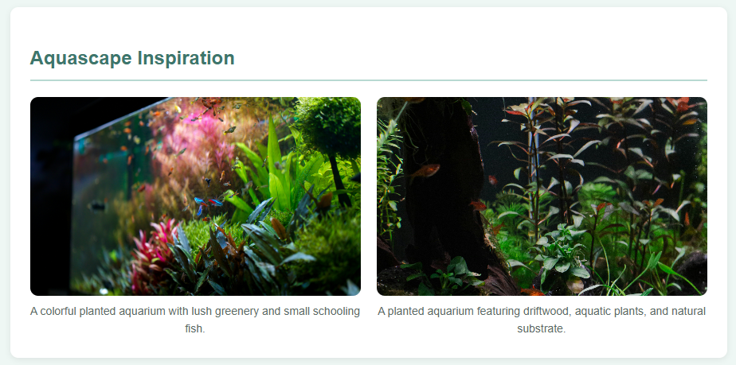

Learning by Doing
As a cybersecurity student at BYU-Idaho, I'm developing my technical skills through coursework, personal interests, and hands-on projects.
Web Development
Freshwater Shrimp Aquascaping Website
Designed a beginner-friendly educational website using HTML, CSS, and JavaScript. Features an interactive tip generator that displays random shrimp-care advice.

Technologies: HTML, CSS, JavaScript
Firebase Portfolio Website
Developed a personal portfolio using HTML and CSS, deployed with Google Firebase Hosting, and maintained through GitHub.
Technologies: HTML, CSS, Firebase, GitHub
View Source Code →Linux & Systems
Ubuntu Linux SecurityLab
Created a local Ubuntu virtual machine using VirtualBox to practice terminal commands, file permissions, process monitoring, and system logs.
Tools: Ubuntu, VirtualBox, Bash, chmod, ps, journalctl
AWS EC2 Linux Instance
Used AWS Learner Lab to launch and access an Ubuntu Linux instance, gaining introductory experience with cloud-based virtual machines.
Tools: AWS EC2, Ubuntu Linux
What's Next?
I'm continuing to explore Python, Linux, and cybersecurity. I'll add more projects here as I develop my skills.
← Back to Home